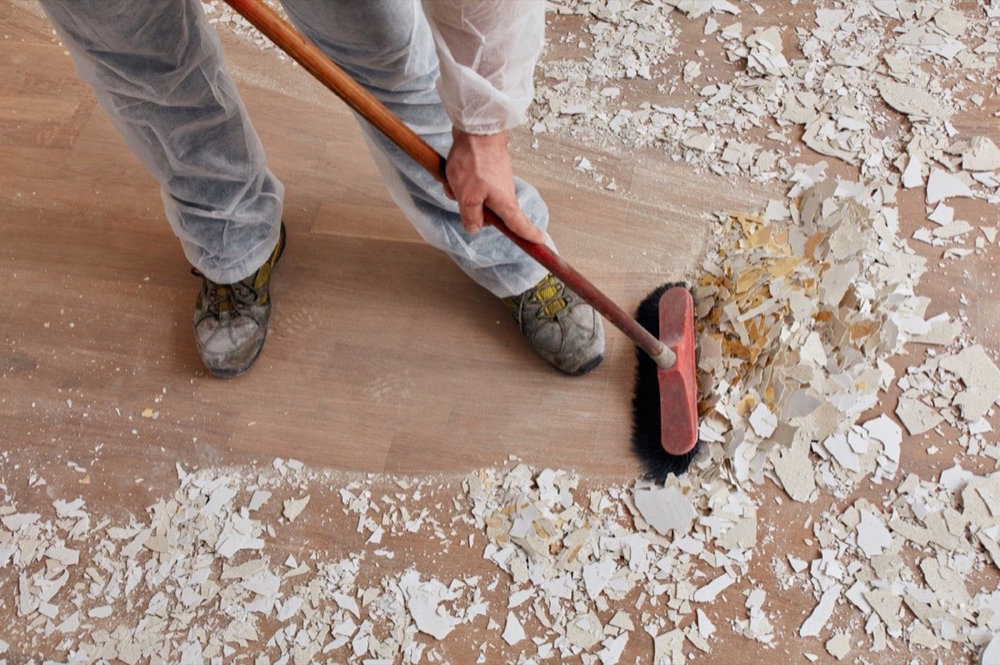

Best time to schedule post-construction cleaning
- After kitchen, bathroom, flooring, or whole-home remodeling
- Before move-in, listing photos, or final project handoff
- When fine construction dust is settling on surfaces and vents
Renovation dust lingers in all the places you notice later. Our post-construction cleaning removes fine dust and residue so your remodeled space actually feels complete and ready to use.

Post-construction cleaning focuses on the leftover dust and surface residue that standard cleaning does not fully handle, especially after contractors finish major work.
Detailed wipe-downs target settled construction dust on counters, trim, fixtures, and high-touch surfaces.
Floors, corners, and baseboard lines are cleaned so fine debris does not keep circulating after the project ends.
Final detail work helps the space feel complete, clean, and ready for daily use or occupancy.
This service is for homeowners, managers, and residents who need a reliable cleanup before the next step. We can align service with final walkthroughs, tenant turnovers, or move-in dates.
Request a Quote with your project scope and timeline, and we will recommend the right visit type.